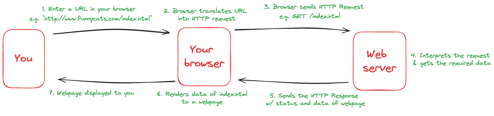

Web Scraping
Extraire des données structurées depuis une page web en Python avec `requests` et `BeautifulSoup`, et les intégrer dans un DataFrame Pandas.
📋 Cheatsheet — Web Scraping
import requests
from bs4 import BeautifulSoup
## ── RÉCUPÉRER LE HTML ─────────────────────────────────
response = requests.get(url) # requête simple
response = requests.get(url, headers={"User-Agent": "Mon app"}) # avec header (anti-403)
soup = BeautifulSoup(response.content, "html.parser") # parser le HTML
## ── RECHERCHER DES ÉLÉMENTS ──────────────────────────
soup.find('h1') # premier <h1> trouvé
soup.find_all('article') # liste de tous les <article>
soup.find('p').text # texte contenu dans le premier <p>
soup.find(class_="infobox-data") # par classe CSS (class_ → évite conflit avec mot-clé Python)
soup.find_all("li", class_="package") # tous les <li> de classe "package"
soup.find(id="author") # par attribut id
soup.find(id="author").text # texte de l'élément trouvé
## ── STRUCTURE HTML TYPIQUE ───────────────────────────
## <p class="summary">Texte ici</p>
## → tag : "p"
## → attribut class : "summary"
## → contenu : "Texte ici"
## ── SCRAPER UNE PAGE EN FONCTION ─────────────────────
def scrape_region(country):
url = f"https://en.wikipedia.org/wiki/Geography_of_{country}"
headers = {"User-Agent": "Data Sourcing Demo"}
response = requests.get(url, headers=headers) # récupère le HTML
soup = BeautifulSoup(response.text, "html.parser") # parse le HTML
infobox = soup.find(class_="infobox-data") # trouve l'élément cible
return infobox.text if infobox else None # retourne le texte ou None
## ── APPLIQUER SUR UN DATAFRAME ───────────────────────
df['Region'] = df['Full Name'].map(scrape_region) # applique la fonction sur chaque ligne
## ── SAUVEGARDE INTERMÉDIAIRE ─────────────────────────
import csv
with open('data/tmp.csv', 'a') as f: # mode 'a' = append (reprend sans écraser)
writer = csv.writer(f)
writer.writerow([country, region]) # une ligne écrite à chaque itération
df = pd.read_csv('data/tmp.csv', names=['Full Name', 'Region']) # relire les résultats
## ── SAUVEGARDER LE RÉSULTAT FINAL ────────────────────
df.to_csv("countries_regions.csv", index=False) # index=False pour ne pas sauvegarder l'index Pandas⚠️ Récapitulatif — Erreurs clés à éviter
Oublier le User-Agent sur certains sites
response = requests.get(url) # ❌ 403 Forbidden sur Wikipedia
response = requests.get(url, headers={"User-Agent": "Mon app"}) # ✅Utiliser class au lieu de class_ dans BeautifulSoup
soup.find("li", class="package") # ❌ SyntaxError — class est un mot-clé Python réservé
soup.find("li", class_="package") # ✅ BeautifulSoup accepte class_ pour les classes CSSAppeler .text sans vérifier que l'élément existe
region = soup.find(class_="infobox-data").text # ❌ AttributeError si l'élément est absent
infobox = soup.find(class_="infobox-data")
region = infobox.text if infobox else None # ✅ vérifier avant d'accéder à .textAjouter try/except trop tôt pendant le développement
def scrape(country):
try:
... # ❌ masque toutes les erreurs → impossible de débugger
except:
return None
## ✅ Tester d'abord sur UN cas, s'assurer que ça marche, puis ajouter try/exceptNe pas sauvegarder les résultats intermédiaires
## ❌ Si le scraper est bloqué au pays 150, tout est perdu
## ✅ Écrire chaque résultat dans un CSV au fil de la boucle (voir section 5)1) Qu'est-ce que le scraping ?
Le web scraping est le processus automatisé d'extraction de données structurées depuis des sites web. Il repose sur des scripts qui récupèrent le HTML d'une page et en extraient les informations utiles.
À utiliser en dernier recours. Préférer toujours un CSV, une base SQL ou une API quand c'est disponible.
- Les structures HTML changent et peuvent casser ton code
- Scraper peut violer les CGU de certains sites
- Des mécanismes anti-scraping peuvent te bloquer
1.1 Notre mission 🎯
On a déjà un dataset avec des informations par pays, mais il manque la région géographique de chaque pays. On va l'extraire depuis Wikipedia :
https://en.wikipedia.org/wiki/Geography_of_<Nom_du_pays>2) HTML — rappels
HTML (HyperText Markup Language) est le langage standard pour structurer le contenu du web. Le navigateur reçoit du HTML via HTTP et l'affiche sous forme de page.

2.1 Structure d'un élément HTML
## <p class="summary">This is a paragraph of the class summary.</p>
## ├── tag : "p"
## ├── attribut : class="summary"
## └── contenu : "This is a paragraph of the class summary."Un élément peut avoir zéro ou plusieurs attributs : class, id, src, href, style…
2.2 Exemple de page HTML
## Structure HTML typique
## <html>
## <header><title>HTML example</title></header>
## <body>
## <h1>My First Heading</h1>
## <p>This is a very simple html page.</p>
## <h2>Packages we use today</h2>
## <ul>
## <li class="built-in">CSV</li>
## <li class="package">Pandas</li>
## <li class="package">Requests</li>
## <li class="package">BeautifulSoup</li>
## </ul>
## <div id="credits">
## <span>By <a href="http://www.lewagon.com" id="author">Le Wagon</a></span>
## </div>
## </body>
## </html>Inspecter le HTML d'une page
Clic droit sur n'importe quel élément d'un site → Inspecter pour voir l'arbre HTML complet.
3) BeautifulSoup
BeautifulSoup est la librairie Python de référence pour parcourir et extraire des données depuis du HTML ou du XML.
3.1 Structure typique d'un scraper
import requests
from bs4 import BeautifulSoup
response = requests.get(url) # récupère le HTML brut
soup = BeautifulSoup(response.content, "html.parser") # parse le HTML en arbre navigable
## On peut maintenant interroger l'objet soup
soup.title.string # titre de la page
soup.find('h1') # premier <h1>
soup.find_all('a') # tous les liens <a>3.2 Rechercher par nom d'élément
## HTML :
## <h1>My First Heading</h1>
## <article>How to load CSVs?</article>
## <article>API calls with Python</article>
paragraph = soup.find("p") # retourne le premier <p> trouvé
articles = soup.find_all("article") # retourne une liste de tous les <article>3.3 Rechercher par classe CSS
## HTML :
## <li class="built-in">CSV</li>
## <li class="package">Pandas</li>
## <li class="package">Requests</li>
items = soup.find_all("li", class_="package") # class_ (avec underscore) pour éviter le conflit Pythonclass est un mot-clé réservé en Python. BeautifulSoup utilise class_ à la place.
3.4 Rechercher par id
## HTML :
## <a href="http://www.lewagon.com" id="author">Le Wagon</a>
item = soup.find(id="author").text # retourne "Le Wagon"4) Application — scraper Wikipedia
4.1 Tester sur un seul pays
Toujours commencer par faire fonctionner le scraper sur un seul exemple avant de boucler.
import requests
from bs4 import BeautifulSoup
url = "https://en.wikipedia.org/wiki/Geography_of_Belgium"
## Wikipedia exige un User-Agent, sinon réponse 403 Forbidden
headers = {"User-Agent": "Data Sourcing Demo - just for illustration purposes"}
response = requests.get(url, headers=headers) # récupère le HTML
soup = BeautifulSoup(response.text, "html.parser") # parse le HTML
infobox = soup.find(class_="infobox-data") # trouve la première cellule de l'infobox
region = infobox.text # extrait le texte
print(region)## Output
Europe4.2 Refactoriser en fonction
def region_scraper(country):
url = f"https://en.wikipedia.org/wiki/Geography_of_{country}"
print(f"Scraping info for {country}")
try:
headers = {"User-Agent": "Data Sourcing Demo - just for illustration purposes"}
response = requests.get(url, headers=headers) # récupère le HTML
soup = BeautifulSoup(response.text, "html.parser") # parse le HTML
infobox = soup.find(class_="infobox-data") # trouve l'élément cible
region = infobox.text # extrait le texte
return region
except:
return None # retourne None si la page ou l'infobox est introuvableregion_scraper("Belgium")## Output
'Europe'try/except : seulement quand le code fonctionne
Ne jamais ajouter try/except pendant le développement — cela masque les erreurs. L'ajouter uniquement une fois que le cas simple fonctionne correctement.
4.3 Appliquer sur tout le DataFrame
## map() applique la fonction sur chaque valeur de la colonne
regions = iso_df['Full Name'].map(region_scraper)
## Assigner le résultat dans une nouvelle colonne
iso_df['Region'] = regions4.4 Vérifier les résultats
iso_df['Region'].isnull().sum() # nombre de pays sans région trouvée## Output
104Pourquoi autant de None ?
- "St. Lucia" → Wikipedia veut "Saint Lucia"
- Burkina Faso → pas d'infobox sur sa page
- Andorra, Austria → format d'infobox différent
Le scraping est fragile par nature. Quand c'est possible, utiliser un CSV ou une API à la place.
5) 💾 Sauvegarder les données
5.1 Sauvegarde simple
import pandas as pd
iso_df.to_csv("countries_regions.csv", index=False) # index=False → pas de colonne d'index Pandas5.2 Sauvegarde intermédiaire (bonne pratique)
Pour des scraping longs, sauvegarder au fil de la boucle permet de reprendre en cas d'interruption.
import csv
tmp_file_path = "data/regions_tmp.csv"
start_index = 0 # modifier cette valeur pour reprendre depuis un point d'arrêt
with open(tmp_file_path, 'a') as tmp_file: # mode 'a' = append — ne pas écraser les données existantes
csv_writer = csv.writer(tmp_file)
for country in iso_df['Full Name'][start_index:]:
region = region_scraper(country)
csv_writer.writerow([country, region]) # écriture immédiate à chaque itérationReprendre un scraping interrompu
Si le scraper est bloqué au pays 80, compter le nombre de lignes déjà dans le CSV et mettre start_index = 80. Le CSV en mode append ne réécrit pas ce qui a déjà été collecté.
Relire les résultats intermédiaires :
country_region_df = pd.read_csv(tmp_file_path, names=['Full Name', 'Region'])
country_region_df.head()## Output
## Full Name Region
## 0 Afghanistan Asia
## 1 Åland Islands NaN
## 2 Albania Europe
## 3 Algeria Africa
## 4 American Samoa United States[a]6) Pour aller plus loin
Wikipedia a une API Python officielle — bien plus fiable que le scraping HTML.
Dans la pratique, pour les régions par pays, un simple CSV de référence aurait suffi et évité tout ce scraping. Toujours chercher une source de données plus directe avant de scraper.
🧭 Introduction
Le web scraping est une technique qui permet d'extraire automatiquement des données depuis des pages web. Plutôt que de copier-coller manuellement des informations, on écrit un script Python qui va lire le code HTML d'une page et en extraire ce dont on a besoin.
Pour faire du scraping en Python, on utilise deux outils qui travaillent ensemble :
requests: envoie une requête à un site web et récupère le HTML brut (comme si ton navigateur visitait la page)BeautifulSoup: lit ce HTML et permet d'y chercher des éléments précis (un titre, un tableau, une cellule...)
A retenir avant de commencer
- Le scraping est un dernier recours — si un CSV ou une API existe, utilise-les à la place.
- Les structures HTML changent : un site peut mettre à jour sa mise en page et casser ton code du jour au lendemain.
- Scraper peut violer les conditions d'utilisation d'un site — toujours vérifier avant.
- Certains sites bloquent les bots — il faut parfois se présenter avec un User-Agent pour ne pas être rejeté.
- Sur de grands volumes, sauvegarde au fil de l'eau : si ton script plante au 150e pays, tu ne veux pas tout recommencer.
L'analogie fil rouge
Imagine que tu reçois un annuaire papier (le HTML) d'une ville. requests va te chercher cet annuaire depuis la bibliothèque. BeautifulSoup est ta loupe : elle te permet de trouver rapidement la rubrique "boulangeries" ou la fiche de Monsieur Dupont sans lire tout l'annuaire à la main.
Mini-plan du cours
- Qu'est-ce que le HTML ? (ce qu'on va lire)
- Comment récupérer et analyser une page avec Python ?
- Comment chercher des éléments précis dans le HTML ?
- Application complète : scraper Wikipedia pays par pays
- Comment sauvegarder les données proprement ?
1. Le HTML — ce qu'on lit quand on scrape
Quand tu visites un site web, ton navigateur reçoit du HTML (HyperText Markup Language). C'est un fichier texte structuré en balises imbriquées. Le navigateur lit ces balises et les affiche joliment. Nous, on va lire ce fichier brut pour en extraire des données.
Un élément HTML, c'est quoi ?
Chaque morceau d'une page est décrit par une balise (tag), qui peut avoir des attributs, et contient du contenu (texte ou d'autres balises).
# Exemple d'élément HTML :
# <p class="summary">Ceci est un paragraphe.</p>
#
# Décomposition :
# ├── tag : "p" → le type d'élément (paragraphe)
# ├── attribut : class="summary" → une propriété de l'élément
# └── contenu : "Ceci est un paragraphe." → le texte visibleLes attributs courants sont class, id, href (pour les liens), src (pour les images)...
Une page HTML complète ressemble à ça
# <html>
# <header><title>Ma page</title></header>
# <body>
# <h1>Mon premier titre</h1>
# <p>Un paragraphe de texte.</p>
# <h2>Packages Python utiles</h2>
# <ul>
# <li class="built-in">CSV</li>
# <li class="package">Pandas</li>
# <li class="package">Requests</li>
# <li class="package">BeautifulSoup</li>
# </ul>
# <div id="credits">
# <span>Par <a href="http://www.lewagon.com" id="author">Le Wagon</a></span>
# </div>
# </body>
# </html>Astuce pratique : dans ton navigateur, fais un clic droit sur n'importe quel élément d'un site, puis clique sur "Inspecter". Tu verras le code HTML exact de la page — c'est indispensable pour repérer ce qu'on veut extraire avant d'écrire le code.
2. Récupérer une page web avec requests
La librairie requests permet d'envoyer une requête HTTP à un serveur et de récupérer la réponse — c'est-à-dire le HTML de la page.
Requête simple
import requests # importe la librairie
url = "https://en.wikipedia.org/wiki/Geography_of_Belgium"
response = requests.get(url) # envoie une requête GET à l'URL et stocke la réponse
print(response.status_code) # affiche 200 si la requête a réussi (404 = page introuvable)
print(response.text[:500]) # affiche les 500 premiers caractères du HTML reçuLe problème du User-Agent
Certains sites (dont Wikipedia) vérifient si la requête vient d'un vrai navigateur ou d'un bot. Si tu ne te présentes pas, ils peuvent répondre avec une erreur 403 Forbidden.
La solution : ajouter un en-tête (header) qui simule un navigateur normal.
import requests
url = "https://en.wikipedia.org/wiki/Geography_of_Belgium"
# On précise qui on est avec un User-Agent — Wikipedia l'exige
headers = {"User-Agent": "Data Sourcing Demo - just for illustration purposes"}
response = requests.get(url, headers=headers) # requête avec identification
print(response.status_code) # doit afficher 200Sans headers={"User-Agent": "..."}, Wikipedia renvoie une erreur 403 et tu n'obtiens pas le HTML. Toujours vérifier le status_code avant d'aller plus loin.
3. Analyser le HTML avec BeautifulSoup
Une fois le HTML récupéré, il faut le "découper" intelligemment pour en extraire des données. C'est le rôle de BeautifulSoup.
Créer l'objet soup
import requests
from bs4 import BeautifulSoup # importe BeautifulSoup depuis le package bs4
url = "https://en.wikipedia.org/wiki/Geography_of_Belgium"
headers = {"User-Agent": "Data Sourcing Demo"}
response = requests.get(url, headers=headers) # récupère le HTML
# BeautifulSoup reçoit le contenu HTML et le "parse" (analyse) en arbre navigable
soup = BeautifulSoup(response.content, "html.parser")
# L'objet soup est maintenant une représentation structurée de la page
# On peut l'interroger pour trouver n'importe quel élément"html.parser" est le moteur d'analyse HTML intégré à Python. Il existe d'autres parsers comme lxml (plus rapide), mais html.parser est suffisant pour débuter et ne nécessite pas d'installation supplémentaire.
Chercher par nom de balise — find() et find_all()
Il y a deux fonctions principales pour chercher dans le HTML :
find("balise")→ retourne le premier élément correspondantfind_all("balise")→ retourne une liste de tous les éléments correspondants
# Exemple basé sur ce HTML :
# <h1>Mon premier titre</h1>
# <article>Comment charger des CSV ?</article>
# <article>Appels API avec Python</article>
premier_p = soup.find("p") # retourne le premier <p> trouvé dans la page
tous_articles = soup.find_all("article") # retourne une LISTE de tous les <article>
print(premier_p.text) # .text extrait uniquement le texte (sans les balises)
print(len(tous_articles)) # nombre d'articles trouvés.text est une propriété de BeautifulSoup qui retourne le contenu texte d'un élément, sans les balises HTML. C'est ce qu'on utilisera le plus souvent pour récupérer des données.
Chercher par classe CSS — class_
En HTML, les éléments peuvent avoir une propriété class qui sert à les styliser ou à les regrouper. C'est souvent le moyen le plus précis de cibler un élément.
# Exemple basé sur ce HTML :
# <li class="built-in">CSV</li>
# <li class="package">Pandas</li>
# <li class="package">Requests</li>
# <li class="package">BeautifulSoup</li>
# On cherche tous les <li> qui ont la classe "package"
packages = soup.find_all("li", class_="package") # class_ avec underscore (voir ci-dessous)
for item in packages: # on boucle sur la liste
print(item.text) # affiche : Pandas, puis Requests, puis BeautifulSoupEn Python, class est un mot réservé (il sert à définir des classes Python). BeautifulSoup utilise donc class_ (avec un underscore) pour éviter le conflit. Écrire class= provoque une SyntaxError.
Chercher par identifiant — id
L'attribut id est censé être unique dans une page. C'est donc le moyen le plus ciblé de trouver un élément précis.
# Exemple basé sur ce HTML :
# <a href="http://www.lewagon.com" id="author">Le Wagon</a>
auteur = soup.find(id="author") # trouve l'élément dont l'id est "author"
print(auteur.text) # affiche : "Le Wagon"Tableau récapitulatif des méthodes de recherche
# PAR NOM DE BALISE
soup.find("h1") # premier <h1>
soup.find_all("p") # tous les <p>
# PAR CLASSE CSS
soup.find(class_="infobox-data") # premier élément avec cette classe
soup.find_all("li", class_="package") # tous les <li> avec cette classe
# PAR ID
soup.find(id="author") # l'élément avec cet id (unique)
soup.find(id="author").text # le texte de cet élément4. Application complète — Scraper Wikipedia
Le contexte
On a un DataFrame (iso_df) avec une liste de pays. Il manque une colonne "Région géographique". Cette information se trouve sur des pages Wikipedia du type :
https://en.wikipedia.org/wiki/Geography_of_Belgium
https://en.wikipedia.org/wiki/Geography_of_France
...On va écrire un script qui visite automatiquement ces pages et extrait la région.
Etape 1 — Tester sur un seul pays
Règle d'or : faire fonctionner le code sur un exemple avant de boucler. Ne jamais construire la boucle en premier.
import requests
from bs4 import BeautifulSoup
# On commence par la Belgique — un cas simple pour valider le code
url = "https://en.wikipedia.org/wiki/Geography_of_Belgium"
headers = {"User-Agent": "Data Sourcing Demo - just for illustration purposes"}
response = requests.get(url, headers=headers) # récupère le HTML de la page
soup = BeautifulSoup(response.text, "html.parser") # analyse le HTML
# Sur Wikipedia, la région se trouve dans l'infobox, dans un élément de classe "infobox-data"
infobox = soup.find(class_="infobox-data") # trouve le premier élément avec cette classe
region = infobox.text # extrait le texte
print(region) # Affiche : Europe# Output attendu :
EuropeSi ce code retourne "Europe", le scraper fonctionne pour ce cas. On peut passer à l'étape suivante.
Etape 2 — Transformer en fonction réutilisable
On encapsule le code dans une fonction qui prend un nom de pays et retourne sa région.
def region_scraper(country):
# Construit l'URL dynamiquement avec le nom du pays
url = f"https://en.wikipedia.org/wiki/Geography_of_{country}"
print(f"Scraping {country}...") # affiche la progression
try:
headers = {"User-Agent": "Data Sourcing Demo - just for illustration purposes"}
response = requests.get(url, headers=headers) # récupère la page
soup = BeautifulSoup(response.text, "html.parser") # analyse le HTML
infobox = soup.find(class_="infobox-data") # cherche la cellule région
region = infobox.text # extrait le texte
return region # retourne la région trouvée
except:
return None # si la page n'existe pas ou que l'infobox est absente, retourne None
# Test de la fonction
print(region_scraper("Belgium")) # Affiche : Europe
print(region_scraper("France")) # Affiche : EuropeLe try/except masque toutes les erreurs. Ne l'ajoute qu'une fois que le cas simple fonctionne. Pendant le développement, laisse les erreurs s'afficher — elles t'indiquent ce qui ne va pas.
Le f"...{country}..." s'appelle une f-string : c'est une façon de construire une chaîne de caractères en y insérant des variables directement. Ici, si country = "Belgium", alors f"...{country}" donne "...Belgium".
Etape 3 — Appliquer sur tout le DataFrame
La méthode .map() de Pandas applique une fonction sur chaque valeur d'une colonne. C'est l'équivalent d'une boucle for simplifiée.
# map() va appeler region_scraper("Afghanistan"), region_scraper("Albania"), etc.
# pour chaque valeur de la colonne "Full Name"
iso_df['Region'] = iso_df['Full Name'].map(region_scraper)
# Vérification : combien de pays n'ont pas de région trouvée ?
print(iso_df['Region'].isnull().sum()) # Affiche le nombre de None dans la colonne# Output possible :
104Obtenir beaucoup de None est normal — le scraping est fragile par nature. "St. Lucia" n'existe pas sur Wikipedia (il faudrait "Saint Lucia"), certains pays n'ont pas d'infobox, etc. C'est exactement pour ça qu'on préfère les APIs ou les CSV quand c'est possible.
5. Sauvegarder les données
Sauvegarde simple du DataFrame final
import pandas as pd
# Sauvegarde le DataFrame dans un fichier CSV
iso_df.to_csv("countries_regions.csv", index=False)
# index=False : ne pas inclure la colonne d'index automatique de Pandas dans le CSVSauvegarde intermédiaire — la bonne pratique pour les scraping longs
Si ton scraper traite 200 pays et plante au 150e, tu perds tout. La solution : écrire chaque résultat immédiatement dans un fichier, au fil de la boucle.
import csv # module CSV intégré à Python, pas besoin de l'installer
tmp_file_path = "data/regions_tmp.csv" # chemin du fichier temporaire
start_index = 0 # permet de reprendre là où on s'est arrêté (modifier si interruption)
# Ouvre le fichier en mode "append" (ajout) — ne réécrit pas ce qui existe déjà
with open(tmp_file_path, 'a') as tmp_file:
csv_writer = csv.writer(tmp_file) # crée un objet pour écrire des lignes CSV
# Boucle sur les pays à partir de start_index
for country in iso_df['Full Name'][start_index:]:
region = region_scraper(country) # scrape la région pour ce pays
csv_writer.writerow([country, region]) # écrit immédiatement une ligne dans le CSVSi le scraper est bloqué au pays 80 (par exemple à cause d'une erreur réseau), compte le nombre de lignes déjà dans le CSV et mets start_index = 80. Le mode 'a' (append) reprend sans écraser ce qui a déjà été collecté.
Relire les résultats intermédiaires
import pandas as pd
# Relit le fichier CSV temporaire avec les bons noms de colonnes
country_region_df = pd.read_csv(tmp_file_path, names=['Full Name', 'Region'])
country_region_df.head() # affiche les premières lignes pour vérifier# Output :
# Full Name Region
# 0 Afghanistan Asia
# 1 Åland Islands NaN
# 2 Albania Europe
# 3 Algeria Africa
# 4 American Samoa United States[a]6. Les erreurs classiques à éviter
Oublier le User-Agent
response = requests.get(url) # ❌ 403 Forbidden sur Wikipedia
response = requests.get(url, headers={"User-Agent": "Mon app"}) # ✅Ecrire class au lieu de class_
soup.find("li", class="package") # ❌ SyntaxError — class est réservé en Python
soup.find("li", class_="package") # ✅Appeler .text sans vérifier que l'élément existe
# Si soup.find() ne trouve rien, il retourne None
# Appeler .text sur None provoque une AttributeError
region = soup.find(class_="infobox-data").text # ❌ plante si l'élément est absent
infobox = soup.find(class_="infobox-data") # ✅ on stocke d'abord le résultat
region = infobox.text if infobox else None # ✅ on vérifie avant d'accéder à .textAjouter try/except trop tôt
def scrape(country):
try:
... # ❌ masque toutes les erreurs → impossible de comprendre ce qui ne va pas
except:
return None
# ✅ Tester d'abord sur un cas simple SANS try/except
# ✅ Ajouter try/except seulement une fois que le code fonctionne correctement🎯 Questions de vérification
1. Quelle est la différence entre find() et find_all() dans BeautifulSoup ?
find()retourne le premier élément correspondant (un seul objet), tandis quefind_all()retourne une liste de tous les éléments correspondants. Si aucun élément n'est trouvé,find()retourneNoneetfind_all()retourne une liste vide.
2. Pourquoi BeautifulSoup utilise class_ et non class ?
Parce que
classest un mot réservé du langage Python (il sert à définir des classes). Utiliserclass=dans un appel de fonction provoquerait uneSyntaxError. BeautifulSoup contourne ce problème en acceptantclass_(avec underscore).
3. Pourquoi est-il conseillé de sauvegarder les résultats au fil de la boucle plutôt qu'à la fin ?
Le scraping peut prendre beaucoup de temps et peut être interrompu (coupure réseau, erreur, blocage du site). Si on sauvegarde seulement à la fin, toutes les données collectées sont perdues. En écrivant chaque résultat immédiatement dans un fichier CSV en mode
'a'(append), on peut reprendre depuis là où on s'est arrêté.
4. Dans quel ordre doit-on toujours procéder quand on écrit un scraper ?
Toujours commencer par faire fonctionner le code sur un seul exemple concret, vérifier que le résultat est correct, puis généraliser en fonction, et enfin appliquer sur tout le dataset. Ne jamais construire la boucle en premier.
📌 TL;DR
- Le web scraping extrait automatiquement des données depuis du HTML — c'est un dernier recours (préférer CSV ou API).
requests.get(url, headers={"User-Agent": "..."})récupère le HTML d'une page.BeautifulSoup(response.content, "html.parser")transforme ce HTML en objet Python navigable.soup.find("balise")retourne le premier élément,soup.find_all("balise")retourne une liste.- On peut cibler par classe CSS (
class_="nom") ou par identifiant (id="nom"). - Toujours tester sur un seul exemple avant de boucler sur tout un dataset.
- Vérifier que l'élément existe avant d'appeler
.textpour éviter lesAttributeError. - Sur de longs scraping, sauvegarder au fil de la boucle avec
csv.writeren mode'a'(append). class_(avec underscore) est obligatoire dans BeautifulSoup —classest un mot réservé Python.- Le scraping est fragile : les pages changent, certains noms diffèrent d'un site à l'autre (
"St. Lucia"vs"Saint Lucia").
A. Concepts du cours
Quand scraper, quand ne pas scraper
Le scraping consiste à extraire des données depuis le HTML d'un site web qui n'expose pas d'API. C'est puissant mais c'est presque toujours le dernier recours. Avant de scraper, posez ces questions dans l'ordre :
- Une API existe-t-elle ? (officielle, partenaire, ou tierce). 90% des grands sites en ont une.
- Le site propose-t-il un export ? Beaucoup d'open data publics ont un bouton "télécharger en CSV".
- Y a-t-il un dataset déjà compilé ? Kaggle, data.gouv.fr, Eurostat, ou un repo GitHub.
- Si rien de tout ça, le scraping est-il autorisé ? Le
robots.txt, les CGU, et la loi varient selon les pays.
Un scraper est fragile par construction : si le site change un nom de classe CSS, votre scraper casse silencieusement et continue à insérer des données incorrectes en base. C'est de la dette technique permanente.
Analogie : scraper, c'est comme réparer sa voiture en démontant le pare-brise pour atteindre le moteur. Ça marche, mais c'est sale, ça casse facilement, et il y a des chances que vous abîmiez quelque chose. Quand le constructeur (le site) sort une nouvelle version, vous devez tout refaire.
Le cycle requests + BeautifulSoup
import requests
from bs4 import BeautifulSoup
# 1. Récupérer le HTML
response = requests.get(
"https://example.com/products",
headers={"User-Agent": "Mozilla/5.0 (compatible; MyBot/1.0)"},
timeout=10,
)
response.raise_for_status()
# 2. Parser le HTML
soup = BeautifulSoup(response.text, "html.parser")
# 3. Extraire les éléments
products = soup.select("div.product-card")
for p in products:
name = p.select_one("h3.product-name").get_text(strip=True)
price = p.select_one("span.price").get_text(strip=True)
url = p.select_one("a")["href"]
print(name, price, url)Décomposition ligne par ligne :
requests.get(..., headers=..., timeout=10): récupère la page. SansUser-Agent, beaucoup de sites renvoient une page d'erreur.response.raise_for_status(): lève une exception si statut 4xx/5xx.BeautifulSoup(..., "html.parser"): parse le HTML en arbre navigable.soup.select(...): cherche tous les éléments correspondant au sélecteur CSS..select_one(...): cherche le premier élément correspondant..get_text(strip=True): extrait le texte sans les balises, trim les espaces.p.select_one("a")["href"]: accède à l'attributhrefdu premier lien.
Sélecteurs : CSS et XPath
BeautifulSoup supporte deux syntaxes pour cibler des éléments.
CSS (recommandé en général) :
soup.select("div.product-card") # Toutes les divs avec classe product-card
soup.select_one("h1#title") # Premier h1 avec id title
soup.select("a[href^='https']") # Liens commençant par https
soup.select("ul > li:nth-child(odd)") # Items impairs d'une liste
soup.select("article p:first-of-type") # Premier paragraphe de chaque articleXPath (via lxml) — plus puissant pour des navigations complexes :
from lxml import html
tree = html.fromstring(response.text)
prices = tree.xpath('//div[@class="product-card"]//span[@class="price"]/text()')
parents = tree.xpath('//span[contains(text(), "Sold out")]/parent::div')Bonne pratique : pour identifier les sélecteurs, ouvrez le site dans Chrome, faites Inspecter (F12), clic droit sur l'élément voulu → Copy → Copy selector. Cela vous donne un sélecteur CSS qui marche immédiatement. Affinez ensuite en utilisant des classes plus génériques pour rendre votre scraper résistant aux petits changements.
Parser un site multi-pages
def scrape_all_pages(base_url, max_pages=100):
"""Parcourt les pages de pagination d'un site."""
all_items = []
for page in range(1, max_pages + 1):
url = f"{base_url}?page={page}"
r = requests.get(url, headers=HEADERS, timeout=10)
if r.status_code != 200:
break # Page inexistante
soup = BeautifulSoup(r.text, "html.parser")
items = soup.select("div.item")
if not items:
break # Plus de résultats
all_items.extend([parse_item(it) for it in items])
time.sleep(1) # Politesse entre requêtes
return all_itemsTrois éléments cruciaux :
- Condition d'arrêt : ne jamais boucler à l'infini.
time.sleep: 1 seconde minimum entre les requêtes. Hammer un site est impoli ET vous fera bannir.- Sauvegarde incrémentale : écrire chaque page sur disque au fur et à mesure.
B. Compléments avancés
JavaScript rendering : Selenium et Playwright
Beaucoup de sites modernes (React, Vue, Angular) génèrent leur HTML côté client en JavaScript. Quand vous récupérez la page avec requests, vous obtenez un squelette quasi vide :
<div id="app"></div>
<script src="bundle.js"></script>Aucune donnée à scraper. Solution : utiliser un navigateur headless qui exécute le JS comme un vrai browser.
from playwright.sync_api import sync_playwright
with sync_playwright() as p:
browser = p.chromium.launch(headless=True)
page = browser.new_page()
page.goto("https://example.com/products")
page.wait_for_selector("div.product-card") # Attend que le JS ait rempli la page
html = page.content()
browser.close()
soup = BeautifulSoup(html, "html.parser")Playwright (récent, moderne) est généralement préféré à Selenium (plus ancien, plus lourd).
Attention performance : un browser headless prend ~200 Mo de RAM et ~2 secondes par page. Pour scraper 10 000 pages, c'est plusieurs heures. Avant de sortir l'artillerie lourde, vérifiez si l'API GraphQL ou les XHR du site sont accessibles directement (Network tab du navigateur). Vous économiserez 100x en perf.
Légalité, éthique et robots.txt
Le robots.txt est un fichier à la racine d'un site (https://example.com/robots.txt) qui déclare ce que les bots peuvent et ne peuvent pas faire :
User-agent: *
Disallow: /admin/
Disallow: /api/
Crawl-delay: 5Ce n'est pas une obligation légale, mais c'est une convention universelle. Le respecter est un signe de professionnalisme et vous évite les bannissements.
from urllib.robotparser import RobotFileParser
rp = RobotFileParser("https://example.com/robots.txt")
rp.read()
rp.can_fetch("MyBot/1.0", "https://example.com/products/123") # True / FalseLégal vs interdit : le scraping en lui-même est légal dans la plupart des juridictions tant qu'il s'agit de données publiques. Mais plusieurs lignes rouges :
- Scraper des données personnelles sans consentement → RGPD (Europe), CCPA (Californie)
- Scraper en violation explicite des CGU → procès possible (LinkedIn vs hiQ Labs, Meta vs scrappers)
- Scraper à un rythme qui dégrade le service → délit informatique potentiel
- Revendre des données scrapées sans autorisation → propriété intellectuelle
Règle d'or : ne scrapez jamais ce que vous n'iriez pas chercher manuellement. Ne scrapez jamais à plus d'une requête par seconde. Identifiez votre bot avec un User-Agent contenant un email. Si le site propose une API payante, utilisez-la — c'est moins cher qu'un avocat.
Anti-bot et stratégies de contournement
Les sites se défendent contre le scraping avec différents niveaux :
| Niveau | Mécanisme | Contournement légal |
|---|---|---|
| 1 | Header User-Agent requis | Mettre un UA réaliste |
| 2 | Cookies de session | requests.Session() qui persiste les cookies |
| 3 | CAPTCHA après N requêtes | Ralentir, alterner les IP |
| 4 | JavaScript challenge (Cloudflare) | Playwright, ou service tiers (ScraperAPI) |
| 5 | Empreinte navigateur (TLS, canvas) | Difficile, parfois impossible |
| 6 | IP banning | Proxies rotatifs, IP résidentielles |
Plus vous montez dans l'échelle, plus c'est techniquement difficile et plus c'est moralement et légalement risqué. Les niveaux 5-6 indiquent que le site ne veut vraiment pas être scrapé : continuer expose à des poursuites.
Bonne pratique : pour des projets sérieux et récurrents, envisagez les services de scraping managés (Bright Data, Apify, ScraperAPI). Ils gèrent les proxies, les CAPTCHAs, le rendering JS, et vous garantissent la conformité légale. Le coût (10-100€/mois) est largement compensé par le temps de maintenance économisé.
C. Questions de compréhension
Q1 : Vous scrapez une page et response.text renvoie du texte vide ou une page de chargement. Quelles sont les trois causes principales et comment diagnostiquer ?
💡 Voir l'indice
JavaScript et headers.
✅ Voir la réponse
Cause 1 — JavaScript rendering : la page est rendue côté client, requests ne voit que le squelette. Diagnostic : ouvrez view-source:URL dans Chrome (raccourci Ctrl+U). Si la donnée n'y est pas mais qu'elle est visible dans l'inspecteur, c'est du JS. Solution : Playwright ou trouver l'API XHR sous-jacente.
Cause 2 — User-Agent manquant : le serveur détecte l'absence d'UA et renvoie une page différente. Diagnostic : essayez avec un UA Chrome réaliste.
Cause 3 — Cookies / login requis : la page nécessite une session. Diagnostic : ouvrez un onglet Privé, allez sur la page sans être loggé. Si vous voyez le contenu, c'est juste un cookie ; sinon il faut s'authentifier. Solution : requests.Session() ou Playwright avec login programmatique.
Q2 : Quelle est la différence entre select et find_all en BeautifulSoup, et lequel choisir ?
💡 Voir l'indice
Syntaxe.
✅ Voir la réponse
find_all est l'API historique qui prend des arguments nommés :
soup.find_all("div", class_="product", id="featured")C'est verbeux et le class_ (avec underscore) trahit que class est un mot réservé Python.
select prend un sélecteur CSS standard :
soup.select("div.product#featured")Plus concis, plus expressif (supporte les pseudo-classes :nth-child, :first-of-type, les combinateurs >, ~, +), et c'est la même syntaxe que celle qu'on copie-colle depuis Chrome DevTools.
Préférez toujours select/select_one sauf cas particuliers (recherche par regex sur le texte par exemple). En entretien data engineering, montrer une maîtrise des sélecteurs CSS témoigne d'une expérience web.
Q3 : Vous scrapez un site et après 50 requêtes, vous recevez systématiquement des erreurs 403. Que se passe-t-il et comment réagir éthiquement ?
💡 Voir l'indice
Ratelimiting et IPs.
✅ Voir la réponse
Le site vous a probablement banni ou rate-limité.
Diagnostic :
- Vérifiez les headers de la 403 — souvent
Retry-Afterou un message explicite. - Testez avec une autre IP (4G mobile) — si ça marche, c'est un ban d'IP.
- Testez avec un autre UA.
Réaction éthique :
- Ralentissez drastiquement (1 requête toutes les 5-10 secondes)
- Respectez le
robots.txt - Si le site continue à vous bloquer, acceptez le signal. Le site vous dit qu'il ne veut pas être scrapé.
Forcer le passage avec des proxies tournants vous met en zone grise légale et expose votre employeur à des risques juridiques.
Alternative : contacter le site et demander un accès API officiel — beaucoup acceptent pour des cas d'usage légitimes (recherche, intégration B2B).
Ce qu'il ne faut jamais faire : utiliser plusieurs IPs résidentielles pour brouiller le tracking et continuer comme si de rien n'était.
Ressources additionnelles
- Beautiful Soup documentation — claire et exhaustive
- Playwright Python — la doc officielle
- Web Scraping with Python (Ryan Mitchell, 2nd ed.) — référence du domaine
- Scrapy — framework pour des crawlers de production
- robots.txt Specifications — la spec officielle
- hiQ Labs vs LinkedIn — l'arrêt qui a clarifié la légalité du scraping de données publiques aux US